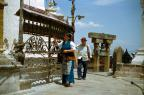
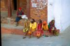
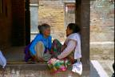
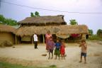

|
Marion gardait un excellent souvenir du Nepal. De veritables vacances par rapport a l'Inde dans un pays superbe habite par des gens vraiment acceuillants.
Aujourd'hui, notre vision est un peu plus amere. En fait d'accueillants, on a surtout trouve des gens... commercants. Partout, tout le temps. A un tel point qu'on ne sait plus trop si les "Namaste" qui nous sont adresses signifient "bonjour" ou "sors tes billets". Et avec le tourisme de masse qui deferle ici (comme en Inde d'ailleurs), pas sur que cela s'arrange.
Malgre cela, le Nepal nous a quand meme procure de bons moments. Il nous a permis d'admirer, entre deux nuages et deux orages, des chaines de montagnes magnifiques comme l'Annapurna depuis Pokhara. L'Himalaya quoi ! Mais la vision fut encore plus extraordinaire depuis Sarangkot.
Et puis, le Nepal c'est aussi et surtout la vallee de Kathmandou. Kathmandou, la capitale pleine de charme avec ses temples et ses ruelles devoilant de superbes maisons aux facades en bois sculptees, Patan et ses temples si nombreux, ou encore Bhaktapur, notre préférée, la ville aux potiers...
Enfin il y a aussi Chittwan, la partie basse du pays, sa jungle peuplee de rhinoceros, de singes et de tigres (qu'on n'a pas vus)... Et puis le trajet vers Darjeeling...
Voir le trajet en détail (étapes, durée, coût)
| Pokhara |

|
Mardi 10 avril -
En route pour le Népal! Trajet cool dans un bus plutôt correct et avec un
chauffeur même pas taré!
Lire la suite ...
|
| Kathmandou |

|
Lundi 16 avril -
On se réveille pleins de courbatures à Kathmandou. Merci Sarangkot!
Lire la suite ...
|
| Swayambunath |
|

|
Mardi 17 avril -
Partir a deux, c'est quand même réconfortant. Il y en a toujours un pour prendre
soin de l'autre.
Lire la suite ...
|
| Patan |
|

|
Jeudi 19 avril -
Il fait super beau. Lionel est toujours malade, il a perdu l'odorat et le gout.
Lire la suite ...
|
| Bhaktapur |
|

|
Samedi 21 avril -
Visite a Bhaktapur ou nous nous sommes regales. C'est un gros village a l'atmosphere
medieval.
Lire la suite ...
|
| La jungle |
|

|
Mercredi 25 avril -
Départ de Kathmandou à 12H30. Arrivée à Sauraha, autrement dit le parc national
de Chittwan.
Lire la suite ...
|
La suite du voyage : Retour en Inde
|